iOS app for tracking training
User manual
Everything you need to lay tracks, walk them and follow your training over time.
Last updated: 10 October 2026
01
Getting started
Trax is made for dog handlers who train tracking. You lay the track with your phone in your pocket, drop items along the way, and walk the track with your dog afterwards while the app shows where the track layer went.
- The first time you open the app, you get a short introduction. Tap “Continue” to go through it.
- Tap “Allow location access” and choose “Allow While Using App”.
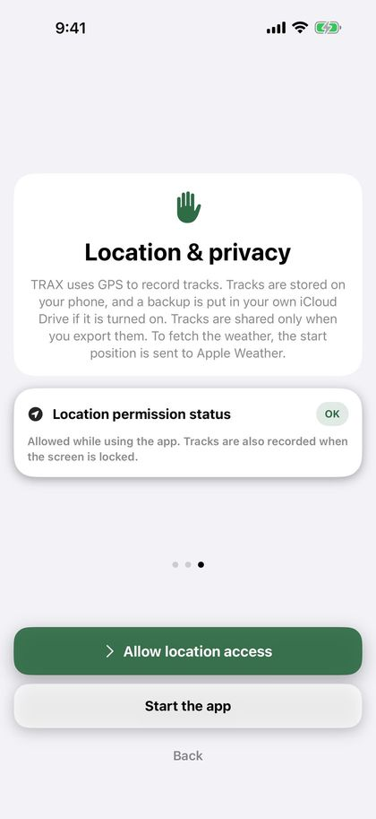
Tip: “While Using App” is enough. Once you have tapped “Start”, tracking continues when the screen is locked or you switch apps, and iOS shows a blue indicator at the top of the screen. You can change access under Settings › Trax › Location on your iPhone.
Trax needs “Precise Location”. Without it, the position can be several hundred metres off. If it is turned off, the app asks for precise location when you lay or walk a track, and shows the card “Precise Location is off” with a link to Settings. Turn on “Precise Location” for Trax there.
Trax and the user manual follow the language of your phone: English, Norwegian (Bokmål) or Swedish.
02
Home screen
Everything starts here, and this is where you find all your tracks.
- “New track” starts laying a track.
- “Import” opens a track from a Trax or GPX file, for example a track someone has sent you.
- “Ready to walk” lists tracks that have been laid but not walked, and how long ago they were laid. “Walk in progress” means the walk has been started but not stopped.
- “Recent tracks” lists the three latest tracks that have been both laid and walked, with the number of finds. Tap a track to see the details.
- “See all” next to “Recent tracks” opens the “Completed tracks” page with all your tracks. At the top right of that page you find the document button for a PDF per dog and “Edit” to delete several tracks.
- If you have registered dogs, buttons appear at the top of the “Completed tracks” page: “All” and one for each dog. Tracks without a dog are listed under “All”. When you choose a dog, you only see its tracks and a summary with the number of tracks, the share of items found, the number of tracks in the last 30 days and “On track”, and a progress chart (see “Dogs”). If the dog has no completed tracks, it says “… has no finished tracks yet”. Dogs you have deleted keep their button as long as they have tracks. To hide such a dog, press and hold its button and choose “Hide from filter”. You can show it again under Settings › My dogs › “Previous dogs”.
- If the tracks on the page have at least two track types, buttons for the track type appear below the dog buttons: “All types”, “Track”, “IGP track” and “Blood track”.
- Small icons on each track show the track type (a figure for a track, a rosette for an IGP track, a drop for a blood track), the dog (a paw), whether the track was imported (arrow in) and whether you have exported it (arrow out).
At the top right you find Settings (the gear) and the User manual (the book).
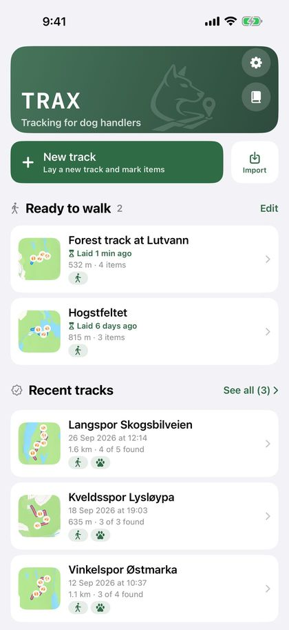
03
Laying a track
As the track layer, you walk the track first while the app records the route with GPS.
- Tap “New track” on the home screen.
- Choose the track type with the three large buttons: “Track”, “IGP track” or “Blood track”. “Track” is chosen by default (see “Track type and blood tracks”).
- The GPS starts as soon as the screen opens. Wait until the GPS dot at the top is green or yellow, then tap the large “Start” button.
- Walk the track. The route is drawn on the map as you go.
- Tap “Item” to drop an item where you are standing (see “Items”).
- If you need a break, tap “Pause”. Tap “Resume” to carry on. The distance covered while paused is not recorded.
- Tap “Stop” when the track is laid.
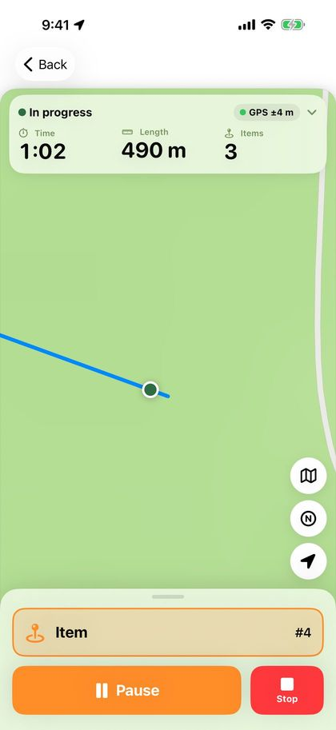
If the GPS signal is weak before you start, a box appears below the panel at the top. Red means you should wait for a better signal, yellow that you can start, but the track will be more accurate if you wait. The box closes by itself when the signal is good, or when you tap “OK, got it”. You can always start.
The panel at the top shows time, length and number of items in large numbers, how accurate the GPS is, and the battery level. A green dot means better than 10 metres, yellow 10–25 metres and red more than 25 metres. “No GPS” means the phone has had no position for more than 15 seconds. Tap the panel to see when the track started, when the position was last updated, and the coordinate where you are standing.
When you tap “Start”, the map zooms in on you, always to the same view. If you zoom during the track, the map keeps the zoom you chose.
The buttons on the right of the map change the map and centre it on you again. The map button cycles between the standard map, topo and satellite. Topo is the topographic map from the Norwegian Mapping Authority (Kartverket), with contour lines and paths. It needs internet access and shows “© Kartverket” at the bottom. Outside Norway topo is not available, and the button goes straight from map to satellite. The N button switches the map direction: north up, or a map that turns with the direction you face. Your choice is remembered, and you can also change it under Settings › Map and tracks.
The arrow above the map buttons shows the wind (see “Weather”).
While you lay the track, it is shown on the lock screen and in the Dynamic Island with time, length and number of items. On the lock screen you can tap “Pause” or “Resume”, and “Item” to drop an item without unlocking the phone.
Important: If you tap “Back” before the track is stopped, the app asks whether you want to discard the track or stop and save it. A discarded track cannot be recovered.
04
Track type and blood tracks
Choose whether the track is a regular track, an IGP track or a blood track. Blood tracks have their own buttons and options.
You choose the track type with the three large buttons on the laying screen before you tap “Start”. You can change it afterwards in the “Track type” card in the track overview. The track type is shown on the track, in the PDF and in the file when you send the track.
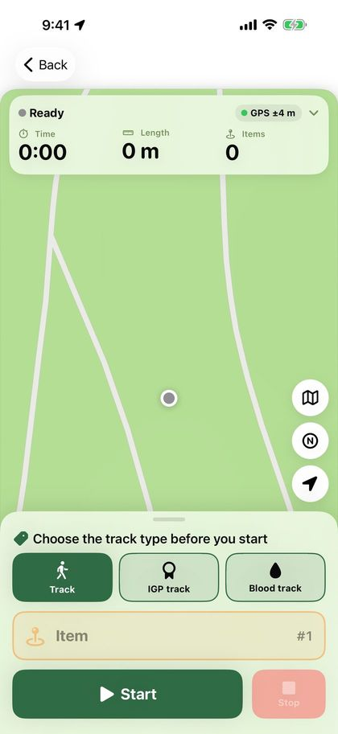
On a blood track, “Item” is replaced by three buttons:
- “Wound bed” places a wound bed where you are standing. It is shown as a dark red drop on the map.
- “Blood stop” marks that there is no blood from here. The button is called “Blood again” while the blood stop lasts. Tap it where the blood starts again. The blood stop is shown as a dashed white line on top of the track.
- “Game” marks where the game lies, with a brown finish flag on the map.
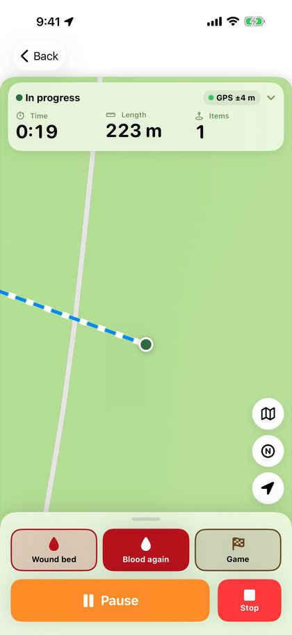
Where the blood track starts, the “Shot site” is shown with an arrow for the flight direction. After “Stop”, and later in the track overview, choose “Flight direction”: “Automatic” (from the first 15 metres of the track), a compass direction or “No arrow”. Turn off “Show flight direction to handler” when the flight direction should not be marked. The shot site and arrow are also shown on a blind track.
In the “Blood and tracking shoe” card you enter the blood amount in dl (optional) and turn “Tracking shoe/hoof” on or off. Below the field you see the blood per 100 metres of track. Less blood per 100 metres makes the track harder. Your last values are suggested next time.
Blood tracks have their own lie time choices, from 30 minutes to 24 hours (see “Lie time”).
When the blood track is walked, wound beds and game count as items. The alert says “Near wound bed” or “Near game”, and the find is recorded as “Wound bed marked as found”. Before a blood stop and before the blood starts again, the app alerts you with “Blood stop” and “Blood again” (see “Alerts and voice alerts”).
The track overview and the PDF list “Wound beds, game and blood stops” with the length of each blood stop, plus the blood amount and tracking shoe. The blood amount is also in the dog report and on the image for social media.
05
Items
- Stand where the item is placed and tap “Item”. The item is saved at once, with a number and position.
- To add a description, for example “sock” or “wooden block”, tap “Describe” in the message that appears.
- Tapped by mistake? Tap “Undo” in the message.
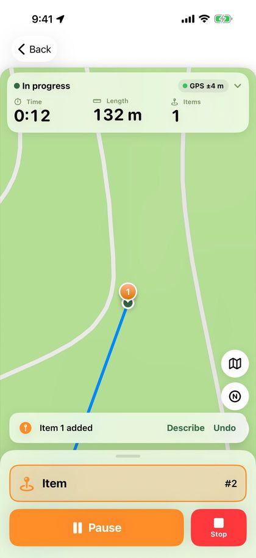
Items are numbered in the order you drop them. You can also write or change the description later in the track overview, under “Items”.
Choose the colour and icon for items under Settings › Map and tracks. Your choice applies to all maps, also in the PDF and on the image for social media.
Tip: If the phone has not found your position yet, the item is not saved. Wait a few seconds until the track starts being drawn, and try again.
06
Saving the track
When you tap “Stop”, the “Save track” sheet opens.
- “Save” saves the track and takes you back to the home screen. The track is listed under “Ready to walk”.
- “Export” lets you choose Trax file, GPX or PDF. Choose “To another Trax user” to send the track to the handler.
- “Continue track” takes you back to the map if you tapped “Stop” too early.
You can give the track a name. If you leave the field empty, the track is named with the date and time.
Under “Surface” you can write what the track goes over, for example forest floor, gravel or meadow. The handler sees the surface on the track, also when you send it to another phone.
Under “Lie time” you choose how long the track should lie before the dog walks it (see “Lie time”). On a blood track, the “Shot site” and “Blood and tracking shoe” cards are also shown (see “Track type and blood tracks”).
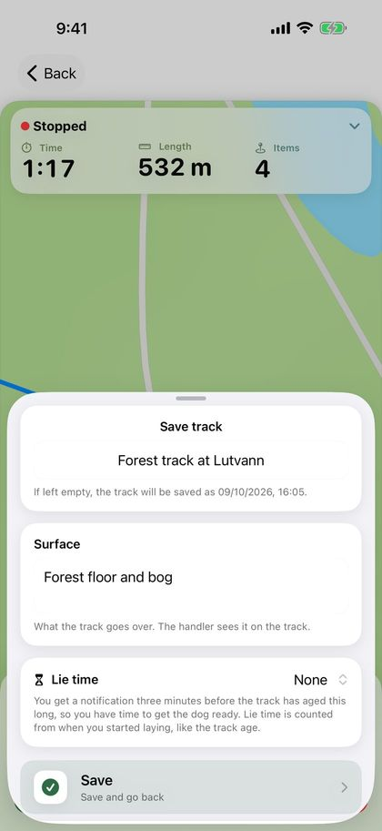
07
Lie time
Lie time (track age) is the time from when you started laying the track until the handler starts walking it. It counts up by itself and is shown both while the track is waiting and while it is being walked. When the track has been walked, the lie time is locked and saved with the track.
To be told when the track has lain long enough, choose a lie time in the “Save track” sheet: “None”, 15, 30, 45, 60 or 90 minutes, 2 hours, or “Custom …” with hours and minutes (up to 48 hours). Your last choice is remembered. On blood tracks the choices are 30 minutes and 1, 2, 3, 6, 12, 18 and 24 hours, and blood tracks remember their own choice.
The first time, the phone asks whether Trax may send notifications. Three minutes before the lie time is up, you get the notification “The track “…” is ready in 3 min (lie time 30 min). Get the dog ready.” The lock screen and the Dynamic Island count down, then show “Track is ready” with the track age until the track is started. Tap the notification or the countdown to open the track.
A lie time over 8 hours has no countdown on the lock screen, only the notification before the track is ready.
The “Lie time” card in the track overview shows the countdown for tracks that are waiting. There you can change the lie time or choose “None”. The notification and countdown disappear when the track is started or deleted.
Tip: The notification is time sensitive and gets through Focus modes such as Sleep when “Time Sensitive Notifications” is on for Trax. If notifications are turned off for Trax, the card tells you, with a button to Settings.
08
Cross tracks
A cross track is a fresher track that crosses the main track, to train the dog to stay on the right track.
- Lay the main track as usual and save it.
- Open the track from “Ready to walk” and tap “Lay cross track” in the “Cross tracks” card.
- The main track is shown faintly on the map. Tap “Start” and walk across the main track. “Pause” and “Stop” work as when you lay a regular track, but cross tracks have no items.
- Tap “Stop”. You can enter who laid the cross track under “Laid by”. Then tap “Save cross track”.
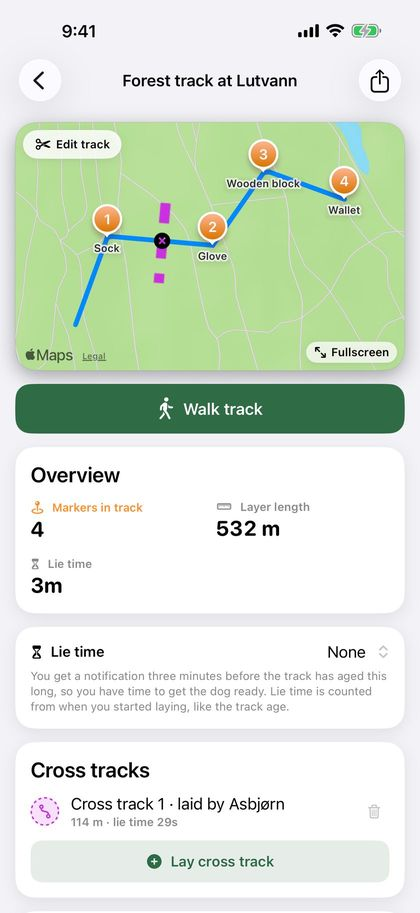
Cross tracks are shown dashed in their own colour, with a small cross mark where they cross the main track. The card shows the length and the cross track’s own lie time. You can lay several cross tracks, and delete one with the bin before the track is walked.
When the dog walks the track, the app alerts you 12 metres before each crossing with “Crossing track” (see “Alerts and voice alerts”). Cross tracks are also shown in playback, in the PDF and on the image for social media, and are included when you send the track. On a blind track they are hidden until the track is stopped.
09
Walking a track
As the handler, you walk the track with your dog. The track layer’s route and the items are shown on the map, and your own route is drawn in a different colour.
- Open the track from “Ready to walk” and tap “Walk track”.
- Choose the dog that will walk the track. If you only have one dog, it is already chosen. If you have not registered any dogs, you can start right away.
- To walk without seeing the track, turn on “Walk blind” (see “Blind tracks”).
- Tap “Start”.
- Follow your dog. Use “Pause” and “Resume” when needed.
- Tap “Found” when the dog indicates an item.
- Tap “Stop” when the track is done.
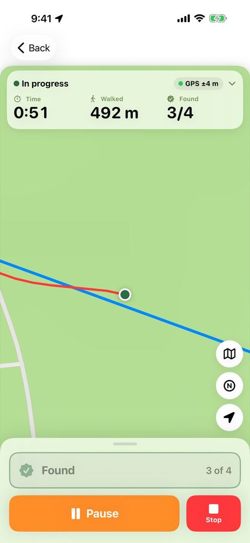
Before you start, the panel at the top shows how old the track is, how long it is and how many items it has. While walking, it shows time, how far you have walked and how many items have been found. Tap the panel to see the lie time. If the GPS signal is weak, the same box is shown as when you lay a track.
When you tap “Start”, the map zooms in on you, to the same view every time. The map follows you as you walk, and if you zoom in or out, the map keeps the zoom you chose. The map button cycles between the standard map, topo (Norway only) and satellite, and the N button switches between north up and a map that turns with your direction. The arrow above the map buttons shows the wind when the dog started the track.
If you get too far from the laid track, the phone vibrates and the “Track lost” card appears at the top with how far away you are. The card disappears when you are back on the track, or when you tap the cross. Read more about this and the other alerts in “Alerts and voice alerts”.
Recording continues when the screen is locked or you switch apps. The walk is shown on the lock screen and in the Dynamic Island, and on the lock screen you can tap “Pause”, “Resume” and “Found”.
If you tap “Back” after you have started, the app asks “End the dog track?”. You can stop and save, pause the walk or choose “Discard dog track”. A paused walk continues when you open the track again. “Discard dog track” only deletes what you have walked. The track that was laid stays under “Ready to walk”.
If the app stops in the middle of a walk, for example because the phone ran out of battery, the walk has been saved along the way. The track is listed under “Ready to walk” with “Walk in progress”. Open the track and tap “Walk track”, and the walk continues from pause. The time the app was stopped is not counted in the time spent.
10
Blind tracks
Walk the track without seeing where the track layer went, as in a trial.
Turn on “Walk blind” before you tap “Start”. The switch is always off when you open the track, so you turn it on each time.
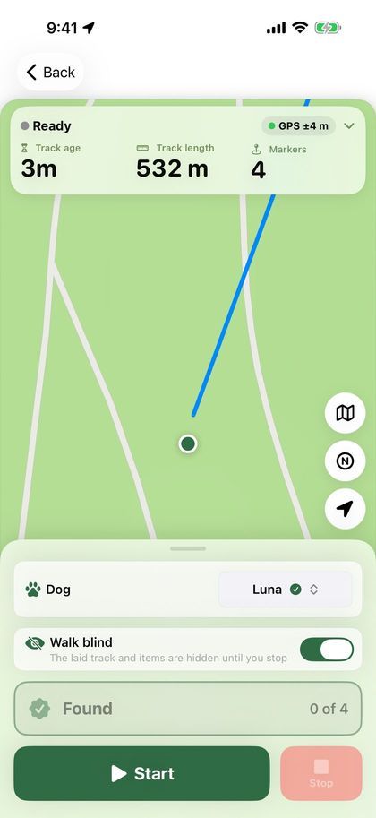
- The laid track, items, blood stops, cross tracks and corners are hidden on the map until you tap “Stop”. The shot site and flight direction on a blood track are still shown.
- You get no alerts along the way, for items, blood stops, track loss or crossing tracks, and items are not read aloud.
- The panel at the top only shows how many items have been found, not how many there are.
- “Found” records the nearest item, however far away it is.
If you need to see the track, for example because you have lost your way, tap “Show track”. Everything is then shown, and the track no longer counts as blind.
The track overview and the PDF show “Walked blind”, and when the track was shown if you tapped “Show track”.
11
Recording finds
When you come within the chosen distance of an item (12 metres by default), a banner shows its number, description and distance. The phone vibrates, also with the screen locked. If GPS is inaccurate, the app waits with the alert until the position is better. You choose the distance and alert type under Settings › Alerts (see “Alerts and voice alerts”).
- Tap “Mark as found” in the banner, or the large “Found” button at the bottom. Choose “Later” if you want to wait.
- If you do not tap anything, the banner closes by itself once you are some way past the item (25 metres, or twice the chosen distance if that is further), or when you get close to the next item. The item is then not recorded as found, but you can tick it off when you stop.
- “Found” can only be tapped when you are within the chosen distance of an item that has not been found yet, both in the app and on the lock screen. If no banner is shown, the nearest one is recorded.
- Tapped by mistake? Tap “Undo” in the message that appears at the bottom.
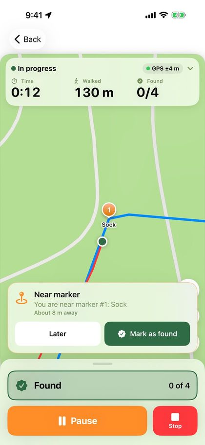
When you stop, the “Walk completed” sheet shows a list of the items. Finds you recorded along the way are already ticked. Correct anything that is missing.
In the same sheet you can give the track an assessment (see “Assessment and corners”) and write notes, for example about the conditions or how the dog worked. The notes are included in the PDF. If the track layer left the surface empty, you can fill it in here. Tap “Save” when you are done.
“Export” in the same sheet shares the track as a Trax file, GPX or PDF right away. To show off the track, tap “Share on social media” (see “Sharing and receiving tracks”).
Tip: To walk the track without alerts and without seeing it, turn on “Walk blind” before you start (see “Blind tracks”).
12
Alerts and voice alerts
While the dog walks the track, the phone can alert you with vibration, sound and voice. All alerts are set under Settings › Alerts.
- “Marker nearby”: when you are within the “Marker distance” (5–50 metres, 12 metres by default). On a blood track this applies to wound beds and game.
- “Blood stop” and “Blood resumes” (blood tracks): before you reach a blood stop, and before the blood starts again after it. Choose the distance under “Distance to blood stop” (20 metres by default).
- “Track loss”: when you have been further from the laid track than the “Distance from track” for a while (5–30 metres, 15 metres by default). The app does not alert until you have been on the track once.
- “Crossing track”: 12 metres before each place where a cross track crosses the track. Crossings close together give one alert.
All of these are on by default. The main “Alerts” switch at the top turns all alerts on and off, including voice alerts. Alerts also appear on the lock screen. On a blind track no alerts are given. Changes to blood stop, track loss and crossing track apply the next time you start a track.
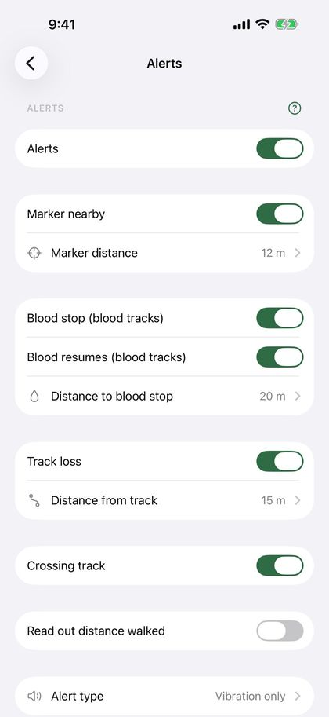
Under “Alert type” you choose “Vibration only” or “Vibration and sound”. The sound only plays when the phone is not on silent or in Do Not Disturb.
Voice alerts: turn on “Read alerts aloud” under “Alert type”. The phone then reads out all the alerts you have turned on, for example “Marker 3, about 11 metres away”, “Blood stop in 20 metres” or “Track lost, about 18 metres from the track”. Tap “Play example” to hear the voice. Voice alerts play in AirPods or the speaker, also with the screen locked and when the phone is on silent. Music is lowered while the message is read.
If you turn on “Read out distance walked” under Alerts, the phone also reads out how far you have walked, for example “300 metres walked”. Under “How often” you choose every 100, 200 or 500 metres, or every km. This only applies when “Read alerts aloud” is on.
Tip: With AirPods in your ears you hear the voice alerts without taking out the phone, and the dog is not disturbed by sound from the speaker.
13
Track overview
Tap a track on the home screen to see everything about it.
- The map shows both routes and all items. Tap “Fullscreen” for a larger map. There, the map button at the bottom right switches between the standard map, topo and satellite. Fullscreen always opens on the standard map.
- “Options” in the top left corner of the map has “Play back walk” and “Edit track”. On a track that has not been walked yet, “Edit track” is shown there directly.
- The result shows how many items were found, the length, the lie time, the time spent and the dog.
- Walked with the wrong dog, or forgot to choose one? Tap “Change dog” or “Choose dog” in the dog row, and pick another dog or “No dog”. If you have not registered any dogs, it says “Add dog”.
- On the map, found items get a small green tick in the corner and keep their colour and symbol, so you can see whether it was a wound bed or game. Items that were not found are grey. The handler’s route is coloured by how far from the track it went (see “Deviation from track”), and small numbered circles show the corners in the track (see “Assessment and corners”).
- “Assessment” below the result shows the rating, difficulty and learning point.
- “Deviation from track” shows how closely the walk followed the track.
- Tracks that are waiting have the “Lie time” and “Cross tracks” cards (see those sections).
- Under “Items” you see each item with its description and result. Tap an item to write or change its description. On a blood track the card is called “Wound beds, game and blood stops”.
- “Track type”, surface and notes are further down. Tap them to change them.
- The share button at the top exports the track as a Trax file, GPX or PDF, and creates the image for social media for completed tracks.
- “Details” shows “Laying started”, “Laying finished”, “Walking started” and “Walking finished”, the number of corners and whether the track was walked blind. Tap “Rename” to give the track a new name.
- “Delete track” at the bottom deletes the track after you confirm.
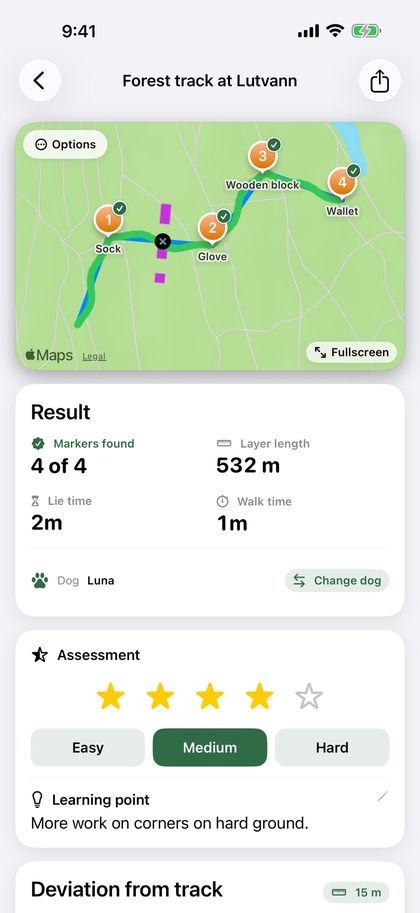
14
Assessment and corners
Give each track an assessment, and see how many corners the track had.
The “Assessment” card is in the “Walk completed” sheet and below the result in the track overview. Everything is optional:
- “Rating”: 1 to 5 stars.
- “Difficulty”: “Easy”, “Medium” or “Hard”.
- “Learning point”: one line on what went well, or what needs more work.
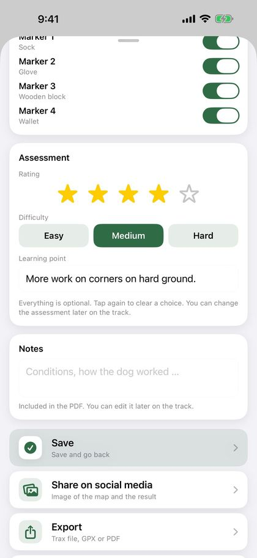
Tap the chosen star or difficulty again to clear it. In the track overview, tap the stars or the difficulty to change them, and the learning point to write it.
The dog’s progress chart has the option “Rating”, with the points coloured by difficulty: green is easy, orange medium and red hard. The PDF shows the rating and difficulty, and the learning point in its own section. The dog report has the average rating on the cover page. The assessment is included when you send the track as a Trax file.
Corners: Trax counts the corners in the laid track by itself, where the track turns at least 45 degrees. Small bends and GPS noise are not counted. “Details” in the track overview shows “Corners”, and the map has small numbered circles at each corner. The PDF has the row “Corners in track”. Tracks under 30 metres get no corners, and on a blind track they are hidden until the track is stopped.
15
Playing back the walk
See how the dog worked, on top of the track that was laid.
- Open a completed track, tap “Options” in the top left corner of the map and choose “Play back walk”.
- Tap the play button. A paw shows where the dog was, and the route is drawn as it goes.
- Drag the timeline to jump forward or back. Below the timeline you see how far into the walk you are, and the time of day.
- Tap the speed button to play 5, 10, 30 or 60 times faster than real time.
Items get a green tick when they are found. On older tracks, where the time of the find was not saved, the item is found where the dog came closest to it.
16
Editing a track
Trim the start or end of a track, for example a long tail because you forgot to tap Stop.
- Open the track, tap “Options” in the top left corner of the map and then “Edit track”. On a track that has not been walked yet, “Edit track” is shown there directly.
- If the track has both the layer’s and the handler’s track, choose which one to trim at the top. You can trim both before you save.
- Drag the handles below the map: the left one is the new start, the right one the new end. The part being trimmed turns grey on the map. Use the arrows to move one point at a time.
- Tap “Save”. Length, duration and lie time are recalculated, and the deviation from the track follows.
If there are items or finds in the part being trimmed, the app asks whether to move them to the nearest point or remove them. A find that is removed counts as not found.
Important: The trim cannot be undone once you have saved. The points that are trimmed away are deleted.
17
Deviation from track
See how closely the walk followed the track that was laid.
The “Deviation from track” card is below the result in the track overview for completed tracks. It shows:
- How much of the walk was within the limit for “on track”.
- “Lost the track”: how many times the handler was outside the limit for at least 20 metres in a row (or twice the limit if that is longer), and how far into the track it first happened.
- Average deviation and largest deviation.
Choose the limit with the button at the top right of the card: 5, 10, 15, 20 or 30 metres. The default is 15 metres. Your choice is remembered and also applies to the PDF and to “On track” in the dog summary. The track loss alert while you walk has its own limit under Settings › Alerts.
On the map, in fullscreen and in playback, the handler’s route is coloured: green within the limit, orange up to twice the limit and red further away. While you walk the track, the colour you chose under Settings › Map and tracks is still used.
Tip: The deviation is measured from the handler’s GPS track, not the dog’s. GPS is often off by a few metres, so small deviations matter little.
18
Weather
Trax fetches the weather where the track started, for the time you started: temperature, wind and wind direction, precipitation and humidity. When the dog starts the track, the weather is fetched again, since the wind may have turned or picked up during the lie time. The weather is saved with the track and included in the PDF export, in the columns “Laid” and “Tracked”.
While the track is laid and while the dog is tracking, a small arrow on the map, above the map buttons, shows where the wind is blowing and its strength in m/s. The arrow points where the wind is blowing, which is where the scent goes, and turns with the map. Tap the arrow to see, for example, “Wind from SW, 4 m/s”. The wind is fetched once at the start and is not updated along the way. The arrow is also shown on the map in the PDF and on the image for social media.
If a track has no weather data, for example because you had no coverage, tap “Fetch weather” in the track overview. This requires internet access.
Weather data comes from Apple Weather. Below the weather card you find the Apple Weather mark and a link to Apple’s list of other data sources.
19
Sharing and receiving tracks
The track layer and the handler do not need to use the same phone. The track layer sends the track as a Trax file.
- When the track is laid, the track layer taps “Export” › “To another Trax user”, or the share button at the top of the track overview.
- Send the file with AirDrop or email. AirDrop works best, because the track then opens directly in Trax on the receiving phone.
- From email or Files, the recipient taps the file. A preview shows the map, length, number of items and surface. Tap the share button and choose Trax.
- Trax shows “Track received” with the length and number of items. Choose “Walk track now” or “Save for later”. “Cancel” closes without importing.
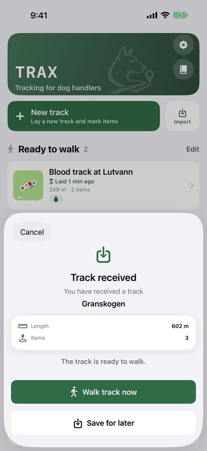
Important: Do not send the track with Messages. If the message goes as SMS instead of iMessage, the file does not arrive, and it is hard to tell in advance which it will be.
The file contains the track layer’s route, the items with their descriptions, the surface, the track type, the cross tracks and everything that belongs to a blood track. If the track has already been walked, the dog’s route and the assessment are included too, and the recipient only gets the choice “Save”. The track is then listed under “Completed tracks”.
You can also tap “Import” on the home screen and choose a file from the Files app. GPX files from other apps and GPS devices work too. Choose “GPX (other apps)” when you want to open the track in another map app.
Does the track layer not have an iPhone? Then the track can be laid in any GPS app that saves GPX files. The track layer saves a waypoint where each item is placed, exports the track as GPX and sends the file by email. You tap the file and choose Trax, just as with a Trax file.
The waypoints become items, with the name as the description, and you get an alert when the dog comes close to them. Items cannot be added in Trax afterwards, so if the file has no waypoints, the track arrives without items. Send one track per file. If the file has two tracks, Trax reads the second one as the dog’s route.
The track gets the “Exported” badge only when the sharing is completed, whether you share a Trax file, GPX or PDF. If you cancel the share sheet, it is not marked.
Share on social media: When you have walked a track, tap “Share on social media” below “Save”. You see the image first: a satellite map with the track and the items, the dog’s name and a card with length, lie time, number found and track type. Tap “Share image” and choose Instagram, Facebook, Snapchat or another app, or “Save Image” to save it to Photos. Sharing does not save the track, so remember to tap “Save” afterwards. To share an older track, use the share button at the top of the track overview.
Tip: Want a shared archive for your training group? Create a folder in iCloud Drive in the Files app and share it with the group. Choose “Save to Files” when you export a track, and put the Trax file in the shared folder. The others tap the file in the folder and open it in Trax, just as from email.
20
PDF report
In the track overview, tap the share button at the top, choose “PDF (multiple)” and select one or more completed tracks. You get one PDF with the map, key figures, items, finds, surface, notes, assessment and weather for each track, ready to send or print.
The key figures also include the track type, corners, “Within X m of the track” and “Lost the track”, and the walk is coloured by deviation on the map, using the limit you chose in the track overview (see “Deviation from track”). Blood tracks also have the blood amount, tracking shoe/hoof and the blood stops. Each item is listed with its coordinate in the format you chose under Settings › Map and tracks, and how accurate the GPS was when the item was dropped, for example “±4 m accuracy”. Older tracks did not save the accuracy, and then it says “accuracy unknown”.
For all the tracks of one dog, tap “See all” next to “Recent tracks” on the home screen, then the document button at the top right. Choose the dog, and turn on “Choose period” if you only want the tracks between two dates. The PDF gets a cover page with a summary, the average rating and a list of the tracks, followed by one page per track. The tracks in the report get the “Exported” badge.
Tip: The PDF report works well as a training log or to show your instructor.
21
Dogs
Register the dogs you train with, so you can see which dog walked each track.
- Go to Settings › My dogs.
- Tap “Add dog” and enter the name.
- Tap “Save”.
Once you have registered dogs, you choose the dog when you start walking a track, not when the track is laid. If you only have one dog, it is chosen for you. The dog is shown in the track overview and in the PDF report.
You can change the dog afterwards in the track overview. On the “Completed tracks” page (tap “See all” on the home screen) you can show the tracks of one dog at a time with the buttons at the top.
When you choose one dog, the card shows four figures: “Tracks”, “Found”, “Last 30 days” and “On track” (the average share of each track that was within the deviation limit). Below is “Progress”: a chart of the dog’s completed tracks over time. Choose what the chart shows: “Track age” (lie time), “Length”, “Found”, “On track”, “Rating” or “Blood” (blood amount per 100 metres, when the dog has at least two blood tracks with a blood amount). The chart appears once the dog has at least two tracks. If the tracks lack the value you chose, it says there are too few tracks to show a chart.
If you delete a dog, its tracks keep the dog’s name. The dog is listed under Settings › My dogs › “Previous dogs” as long as it has tracks, and there you can turn off the switch to hide it from the dog filter. The tracks are still listed under “All”.
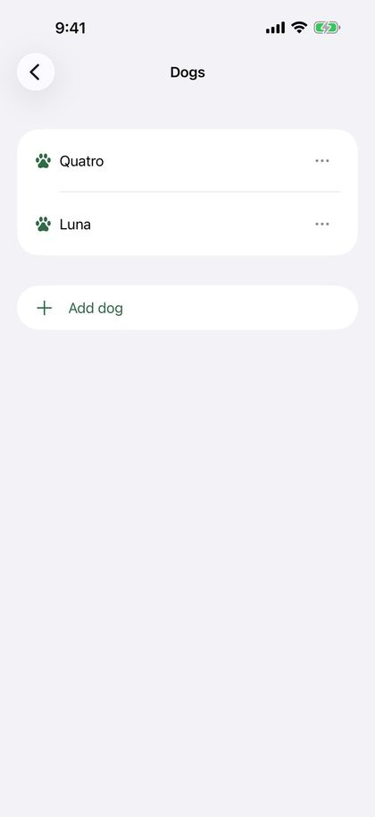
22
Settings
At the top of Settings is “My dogs”, and below it one row for each page: Alerts, Map and tracks, Battery, Backup and About Trax. Tap a row to open the page.
- Alerts: alerts for nearby items, blood stops and blood resuming, track loss and crossing tracks, reading out the distance walked, and the alert type with voice alerts. See “Alerts and voice alerts”.
- Map and tracks: choose the colour and icon of the item markers (number, pin, flag, paw or bag), “Track layer color” and “Handler color”. “Rotate map to my direction” turns the map to face the way you face while laying or walking a track; when it is off, north is always up. Here you also choose the coordinate format: decimal degrees (DD), UTM, degrees/minutes/seconds (DMS) or MGRS.
- Battery: “GPS battery saver” uses less power on long tracks. The track is slightly less detailed, but the proximity alert and “Found” work as before. While recording, the battery level is shown at the top, and the app warns you at 20 and 10 percent, also with the screen locked.
- Backup: automatic copy to iCloud Drive, and backups you create yourself. See “Backup and new phone”.
- My dogs: add, rename or delete dogs. Under “Previous dogs” you can hide deleted dogs from the dog filter.
- About Trax: “Send feedback” opens an email to me with the app version, iOS version and phone model already filled in. Write your question, bug or wish at the top. “Write a review” opens Trax in the App Store, where you can give stars and write a review. “Privacy policy” opens the privacy policy on the Trax website.
Tip: Tap “?” next to a section to see an explanation of its settings. Tap again to hide it.
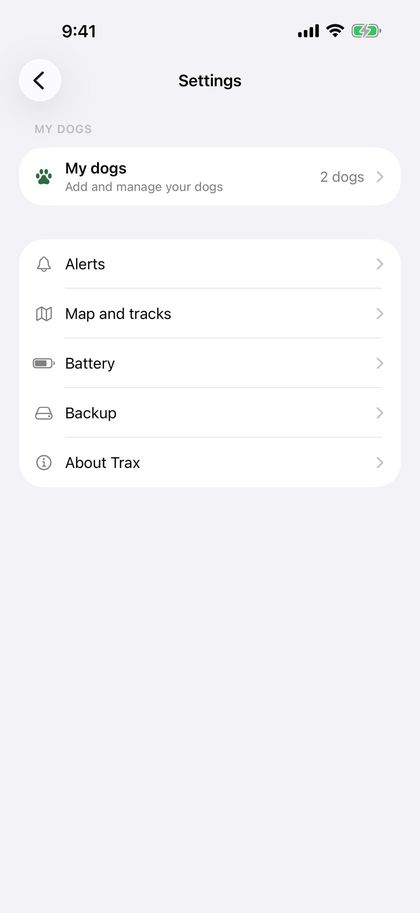
23
Backup and new phone
Keep your tracks safe if you lose your phone or switch to a new one.
“Automatic Copy to iCloud Drive” under Settings › Backup is on by default. Trax then puts a backup in the “Trax” folder in your own iCloud Drive when you leave the app after a change. Below the switch it says when the last copy was made, or that iCloud Drive is off on the phone.
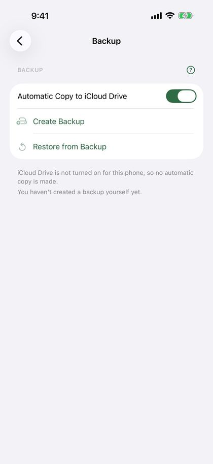
You can also make a backup yourself with “Create Backup”. You get one file (.traxbackup) with all tracks and dogs, which you can save in Files or iCloud Drive, or send to yourself. Below the buttons it says when you last made one.
- New phone, or Trax installed again: Trax asks once whether to get your tracks from iCloud Drive. Choose “Restore”.
- If you have a backup you made yourself, tap the file (it opens in Trax), or choose “Restore from Backup” under Settings › Backup.
- Trax shows how many tracks and dogs the backup has, and asks before anything is added.
Restoring only adds tracks and dogs that are missing. Nothing is deleted or overwritten. A dog with the same name as a dog on the phone becomes the same dog. Everything happens on the phone and in your own iCloud Drive, without an account.
24
Deleting and recovering tracks
Tap “Edit” on the home screen to select and delete one or more tracks. You can also open a track and tap “Delete track” at the bottom of the page. You are always asked before anything is deleted.
Important: Deleted tracks cannot be recovered unless they are in a backup. Export the track as GPX or PDF first if you want to keep it.
If the app stops in the middle of laying a track, for example because the phone ran out of battery, the track has been saved along the way. The next time you open Trax, “Unfinished track” is shown at the top. Choose “Continue” to keep laying, “Finish” to save the track as it is, or “Delete”.
If the app stops in the middle of a walk, the track is listed under “Ready to walk” with “Walk in progress”. Open it and tap “Walk track” to continue from pause. If you would rather start over, tap “Back” and “Discard dog track”.
25
Tips and troubleshooting
- The track is jagged or has gaps: check that Trax has location access and that “Precise Location” is on.
- GPS is less precise in dense forest, in steep valleys and between tall buildings. Wait until the position has settled before you tap “Start”.
- Low Power Mode can give fewer GPS points. Charge the phone before long tracks, or turn on “GPS battery saver” under Settings › Battery.
- Not seeing the track on the lock screen? Check that Live Activities are turned on under Settings › Trax on your iPhone.
- Not getting the notification that the lie time is up? Check that notifications are on for Trax under Settings › Trax › Notifications on your iPhone, and turn on “Time Sensitive Notifications” if you use Focus.
- Not hearing the voice alerts? Check that “Alerts” and “Read alerts aloud” are on under Settings › Alerts › Alert type, and that the volume is up. Tap “Play example” to test.
- Not receiving the track? Send it with AirDrop or email, not Messages. Check that the file name ends in .trax or .gpx, and try “Import” on the home screen.
- Questions or problems? Tap “Send feedback” under Settings › About Trax, or send an email to post@trax-dogtracking.no.
26
Privacy
All tracks are stored on your phone. Trax has no account and no server of its own. If you use iCloud Drive, Trax puts a backup in the “Trax” folder in your own iCloud Drive. You can turn this off under Settings › Backup. Your tracks are shared only when you export them yourself.
The image for social media is created on your phone. If you choose “Save Image”, iOS asks whether Trax may add photos to Photos. Trax can only add photos, not see your photos.
To fetch the weather, the position and time where the track started, and where the dog started the track, are sent to Apple Weather. Apple does not link the request to you or your Apple Account, and no training data is sent.
You find the full privacy policy under Settings › About Trax › Privacy policy.